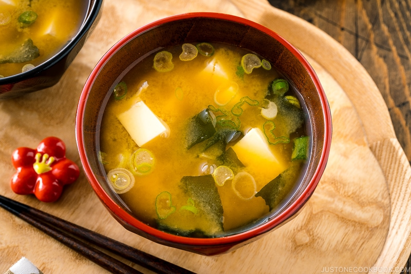

Description
What is miso soup made of?
Miso soup is a traditional Japanese soup that starts with a dashi stock and is flavored with miso paste. Dashi is an umami-rich stock made from dried seaweed and dried fish. Miso paste, meanwhile, is a paste made from soybeans, salt, and koji rice. The brothy soup usually contains tofu and green onions.
Is miso soup healthy?
It's packed with nutrients, like protein, carbohydrates, manganese, vitamin K, copper, and zinc. Because it's made with fermented paste, miso soup is also a good source of probiotics.
Ingredients
- 1 (3-inch) piece of kombu
- 4 cups water
- 3 tablespoons wakame dried seaweed
- ¼ cup white miso paste
- ⅓ cup chopped scallions
- 6 ounces silken tofu, cubed
- tamari, no taste
Steps
- Combine water and dashi granules in a medium saucepan over medium-high heat; bring to a boil.
- Reduce heat to medium and whisk in miso paste. Stir in tofu.
- Separate the layers of green onions, and add them to the soup.
- Simmer gently for 2 to 3 minutes before serving.
Return to top
Return to main page